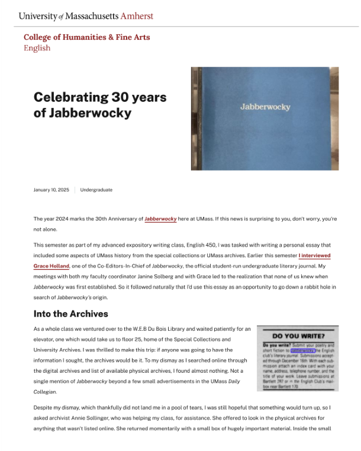
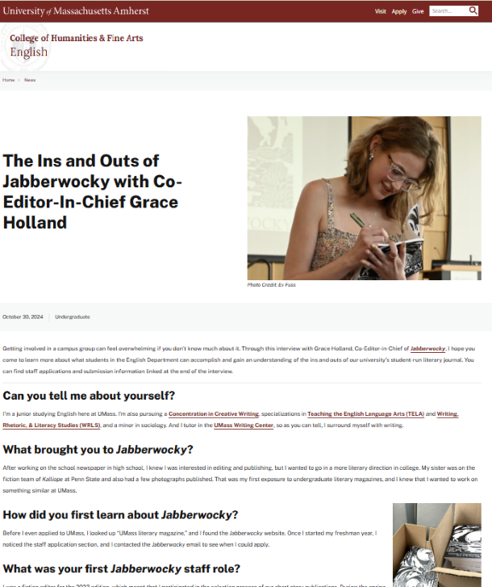

Celebrating 30 Years of Jabberwocky
In this article I share how through archival research, I discovered the history of the undergraduate literary journal
Jabberwocky history article 
The Ins and Outs of Jabberwocky with Co-Editor-In-Chief Grace Holland
In this article I interview Co-Editor-In-Chief Grace Holland about her experiences at UMass Amherst and as a member of Jabberwocky
Jabberwocky interview 